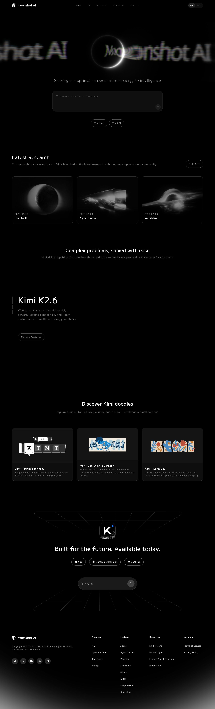

极简克制托底，一处强签名点睛
moonshot 不像 Comet 分“营销层与产品层”两套设计。它只有一套:把画面压到极简,再让日食这一处签名承担全部张力。
- 纯黑到底:
body背景实测rgb(0,0,0),不是常见的 #0a0a0a,是真黑 - 极大留白:首屏只留一句 slogan、一个输入框、两枚按钮
- 居中排版:单栏叙事,信息密度低到极致
- 无彩灰阶:全站零品牌 accent,只有黑白与一条中性灰梯
- 日食环形白光:月掩日的一道纯白光环居中,收束全部视觉重量
- RGB 色散故障字:“Moonshot AI” 被光环撕出红绿蓝残影与横向扫描
- AI 对话前置:首屏直接嵌对话输入框,把能力信号摆到最前
- ghost pill 按钮:透明描边,只在 hover 提亮文字
设计意图:把“能量到智能的转化”做成一次日食
信条 “Seeking the optimal conversion from energy to intelligence” 被视觉化成月掩日的瞬间——能量收束为一道光环,品牌字在相变里被色散撕裂。整站零品牌色是刻意的:当唯一的颜色是“光被拆开”的那一刻,日食的形与故障的动就被无限放大。
纯黑、纯白，加一条中性灰梯
点任意色块复制。除下面这些无彩值外,全站没有第二种颜色——这是 moonshot 最硬的设计取舍。
基底与中性灰梯
语义色(计算样式实测)
关键发现:唯一的彩色是“色散残影”
全站唯一出现的彩色,是故障品牌字上红、绿、蓝三通道错位形成的边缘残影(左侧即纯 CSS 复现:三层 mix-blend-mode:screen 在黑底上叠加,对齐处还原为白,错位处露出色散)。#45454e 是灰梯里唯一略偏冷的中性,其余全落在无彩轴上。复刻第一纪律——别给它补 accent 色。
一款几何无衬线，撑起从超大到极细
实测已加载 M PLUS 1、MiSans、NotoSans-Latin;主字体栈以 M PLUS 1 领衔(样式表出现 7 次,最高频)。本页已把这三支真实字体文件(站点原始 woff2)接进来:拉丁显示与 UI 用真 M PLUS 1,中文用真 MiSans,CDN 同名字仅作兜底。
几何无衬线,字面方正、字腔开阔、笔端收得干净。站点原始文件是可变字体(轴 wght 100–900),一支通吃超大标题到细体 slogan。上面即用站点真实 woff2 渲染;Google Fonts 开源(OFL)。
小米发布、可免费商用的可变字体(轴 wght 150–700)。承担中文态。本页已接入站点真实 MiSans 子集:上面四字即用真字渲染,子集未覆盖的中文回落 PingFang SC 与思源黑体。
站点自带的拉丁兜底子集(仅 53 字形,只含大小写字母)。上面这行即用真字渲染。preloadFont 实测为 3,首屏字体走预加载。
关键发现:排版故意偏小、偏轻
默认落在字号 16px、字重 400、字距仅 0.15px 的微正值。真正的大字号是刻意的例外——靠尺度对比而非字重堆砌制造重音,与整站极大留白的节奏一致。授权也友好:M PLUS 1 与 MiSans 都能合法直接复刻。
手感层 0.2s，环境层 15 到 35s
moonshot 把两种极端时间叠在一起:按钮只用 0.2s 过渡颜色,环境漂移慢到 15 至 35s 几乎察觉不到,故障脉冲居中(2s 出现 15 次,是主音)。点任一卡片重放,曲线与时长为真实取值。
时长阶梯(真实 token,对数刻度便于对比)
双时间尺度
手感层 0.2s 让点击即时;环境层 15s/25s/35s 让故障字漂移与外冕呼吸慢到像没动。快得即时、慢得像凝固,中间那层 1.05s–5s 才是“故障”的心跳。
唯一具名关键帧:vike-react-shine
样式表里抽到的唯一具名 @keyframes。前缀 vike-react- 泄露技术栈是 Vike 加 React(推断);shine 即光泽扫过,正对应光环上游走的高光。libs 与 scriptHints 全空,无第三方动效库外露。
日食光环加色散故障字，拆成三层
拖动滑块调色散位移与横向模糊,或触发一次故障爆发,看这套签名如何由纯 CSS 与 JS 合成。
screen 叠加还原白,错位露色散;feGaussianBlur stdDeviation="x 0.4" 只横向抹开;repeating-linear-gradient 叠 CRT 扫描线。
近黑暗盘压在纯黑底,下缘一道极亮钻石环(radial-gradient 细环加底部高光),外圈低透明外冕 50% 圆缓慢呼吸。
同一行文字拆红绿蓝三层,水平错位,mix-blend-mode:screen。错位量随时间抖动,形成信号不稳的故障感。
横向高斯模糊抹开笔画,扫描线叠 CRT 质感,整条文字带以 15–25s 超慢漂移,永远“活着”。


以上为站点真实图片(从 moonshot.ai 提取,相对路径 real-assets/image/),非本页重建。它们印证了色散与日食是全站的视觉母题,不止首屏。
圆角梯、玻璃、ghost 按钮与极简媒体
克制不等于随意。每个圆角、每层玻璃、每次过渡都落在一套清楚的梯度上。
圆角语言(实测频次梯)
一条清晰的梯:药丸(100px 与 999px)托 ghost 按钮与语言切换,大卡与对话框走 24px,卡片 16px 与 12px,小按钮 8px(btn 实测)与极小元素 4px,圆盘与圆点 50%。
background: rgba(0,0,0,.4);
backdrop-filter: blur(16.75px);blur 半径是精确的 16.75px 而非整数,多半是某个设计变量换算的结果。滚动才显形——静止时导航栏“隐身”在黑里。
背景 透明,文字 rgba(255,255,255,.56),transition: color 0.2s。悬停只把文字从 .56 提到 1,不加位移、不加阴影——克制到只动颜色。
深色面板 #0f0f0f,描边 #1f1f1f,圆角 24px,占位 #737373,右下角 50% 圆形发送按钮。把能力信号直接摆到首屏。
muted autoplay loop playsinline)这三段是站点真实视频(real-assets/video/,VP9 / webm,各约 2s 循环,黑场淡入)。它们是产品能力演示,不是首屏日食——首屏由 canvas 逐帧渲染(实测 preloadVideo 0、canvas 4),故本页首屏仍以等效 CSS 复现。
把上面的数值直接接进你的产品
1 — 落地 token(真实值,复制即用)
:root{
--bg:#000; --ink:#fff;
--ink-56:rgba(255,255,255,.56); /* 按钮字 */
--g12:#121212; --g1f:#1f1f1f;
--g32:#323232; --g45:#45454e;
--font:"M PLUS 1","MiSans",…;
--ease-1:cubic-bezier(.16,1,.3,1);
--pill:100px; --r-input:24px;
--nav-blur:blur(16.75px);
}2 — 日食光环(纯 CSS)
.eclipse .ring{position:absolute;inset:-3px;
border-radius:50%;filter:blur(.5px);background:
radial-gradient(circle,transparent 69%,
#fff 70%,transparent 73%),
radial-gradient(62% 52% at 50% 96%,
#fff,transparent 56%)}
.eclipse .corona{inset:-58%;border-radius:50%;
background:radial-gradient(circle,
rgba(255,255,255,.15),transparent 62%);
animation:corona 6s var(--ease-1) infinite alternate}3 — 色散故障字(三通道 screen 加 SVG 横向模糊)
.glitch{filter:url(#hblur)} /* x 向模糊 */
.layer{position:absolute;mix-blend-mode:screen;
font:800 clamp(42px,8vw,116px) var(--font)}
.r{color:#f00;margin-left:-4px}
.g{color:#0f0}
.b{color:#00f;margin-left:4px}
/* SVG: */ <feGaussianBlur stdDeviation="6 0.4"/>工程要点与坑
- 色散必须黑底:screen 叠加还原白靠的就是
#000底,底不纯黑色散就发灰 - 横向模糊用 SVG:CSS
filter:blur()各向同性,只能靠feGaussianBlur "x y"分离 - 别补品牌色:守住无彩灰阶,彩色只留给色散残影
- backdrop-filter 兜底:不支持时给 nav 更实的
rgba(0,0,0,.7) - 尊重
prefers-reduced-motion:关漂移、抖动、外冕呼吸,日食静态保留
字体授权:对复刻友好
这套排版可以合法直接复刻:M PLUS 1 是 Google Fonts 开源字体(SIL OFL),MiSans 由小米发布、可免费商用。本页已直接接入从站点提取的真实 woff2:拉丁显示与 UI 用真 M PLUS 1、中文用真 MiSans,子集未覆盖处回落 PingFang SC 与思源黑体。
每个数值从哪来，什么是实锤、什么是推断
- 抽取方法
- 对线上
www.moonshot.ai走两条链路:playwright 读关键节点的 计算样式(渲染后真实生效的色、字、圆角、过渡、blur);服务端抓 样式表文本(共 4 份、约 29.6KB,不受 CORS 限制),在原文里统计高频 HEX、缓动、时长、圆角与关键帧名。 - 真实素材回填(本轮)
- 字体、视频、关键图不再用替身:三支真实字体已以
@font-face接入——M PLUS 1(拉丁显示与 UI,可变 100–900)、MiSans(中文,可变 150–700,站点子集)、NotoSans-Latin(拉丁兜底子集),CDN 同名字降为兜底;三段真实视频(Kimi 能力演示)与三张真实图片(研究页宇宙意象:棱镜 / 日食冕 / 引力透镜)以相对路径real-assets/直引。完整清单见real-assets/manifest.json。 - 实锤(抽取所得)
- 全部色值(纯黑底、白字、按钮
.56、导航.4、灰梯 top)、字体(M PLUS 1/MiSans/NotoSans-Latin与 h1 排版)、4 条缓动、时长梯、圆角梯、backdrop-filter blur(16.75px)、关键帧vike-react-shine、媒体清单。 - 推断(观察、命名与重建)
- 技术栈 Vike 加 React(由关键帧前缀推断);首屏 canvas 渲染(由 4 canvas 加 0 预加载 video 推断);日食渐变停靠点与色散通道色(据实拍重建,复现 chromatic aberration 的标准做法,原站静态样式表中并无这三支色值);文案与语义角色映射(
customProps实测为空,token 命名系本拆解归纳)。

局限
动态由 JS 或 canvas 生成的视觉(故障字真实算法、光环实际绘制)未被抽取,本页以纯 CSS 与 JS 做等效复现,忠实于实拍观感与实测 token,但不声称与原站 canvas 逐帧一致。抽取为单次快照,站点更新后数值可能变化。